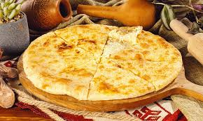

Khachapuri
Home

This Is Khachapuri, One of the most well-known food from Georgia
Khachapuri is a beloved Georgian dish made of soft, freshly baked bread filled with melted cheese.
There are several regional variations, but the most famous is Adjarian khachapuri,
shaped like a boat and topped with a raw egg and a pat of butter,
meant to be mixed in while the bread is still hot.
It’s often enjoyed as a comfort food and shared among friends or family.
Eaten by tearing off pieces of the crust and dipping them into the cheesy,
eggy center, khachapuri is both filling and flavorful.
Its rich taste and cultural significance make it a must-try part of Georgian cuisine.
Ingredients
- Flour – for making the dough
- Yeast – to help the dough rise
- Salt – for seasoning the dough
- Cheese – traditionally sulguni or imeruli cheese
- Egg – cracked on top in the final stage of baking
Step By Step Cooking Process
- Prepare the dough – Mix flour, yeast, salt, warm water (or milk), and a bit of oil; knead and let it rise until doubled in size.
- Shape the dough – Roll out the dough into an oval, then roll the edges inward from both sides and pinch the ends to create a boat shape.
- Add the cheese – Fill the center with a mix of grated sulguni and imeruli cheese.
- Bake – Place in a preheated oven and bake until the crust is golden and the cheese is bubbly.
- Add egg and butter – Crack an egg into the center and add a pat of butter, then return to the oven briefly until the egg white sets but the yolk stays runny.